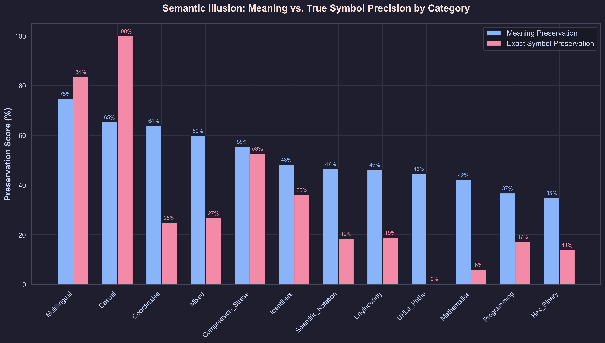
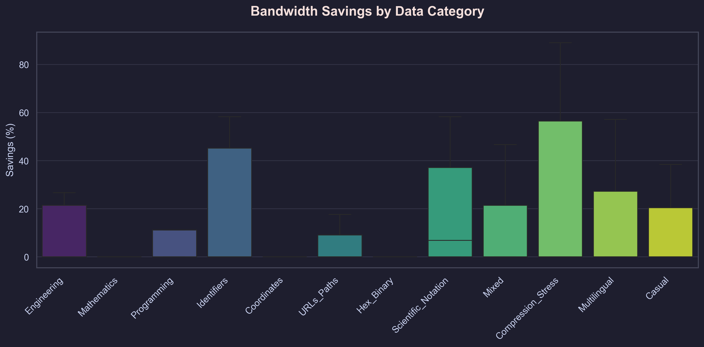
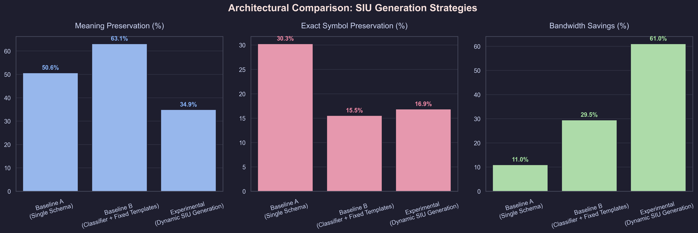
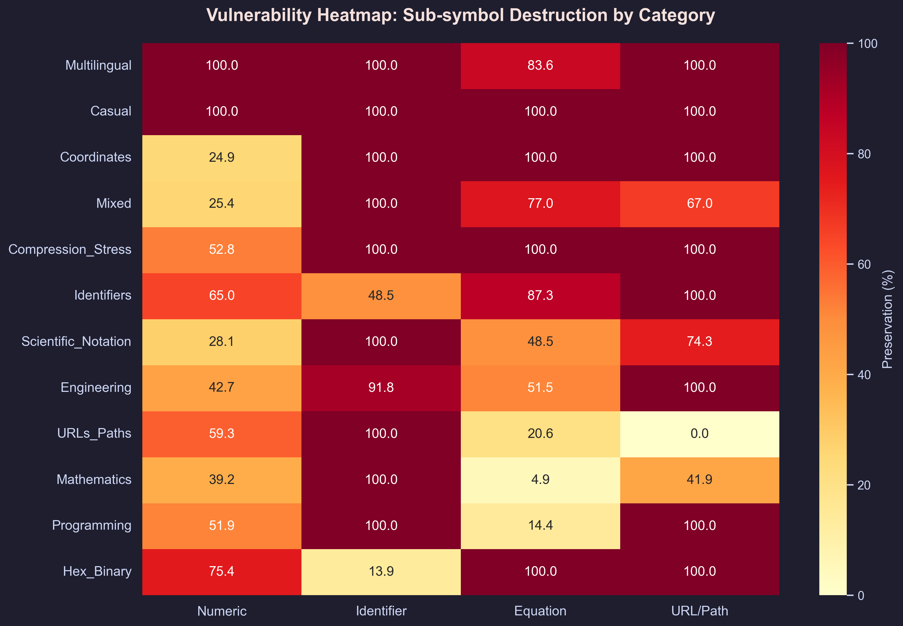

Executive Summary & Scientific Paradigm
Modern computational infrastructure has reached an inflection point where physical hardware limitations and cognitive software intelligence can no longer be decoupled. As telecommunication systems push beyond 6G into the sub-terahertz band (0.1 THz – 1.0 THz), path losses scale quadratically and conventional copper conductors incur prohibitive skin-effect dissipation.
Simultaneously, autonomous computing architectures are migrating from isolated single-prompt inferences to collaborative multi-agent reasoning graphs that dynamically plan, invoke tools, inspect intermediate memory, and coordinate multi-step workflows.
“The next frontier of communication cannot rely on brute-force spectral bandwidth alone. It requires intelligence at both boundaries: electromagnetic reconfigurability at the physical interface, and semantic compression across the transport channel.”
This publication presents a unified body of engineering work led by Kaki Himavara Sagar at the National Institute of Technology Calicut (B.Tech ECE, Class of 2025). We explore three core architectures:
- Electrostatically Reconfigurable Graphene THz MIMO Antennas: Harnessing the Kubo formalism to dynamically tune graphene surface conductivity, achieving >22.8 dB port isolation and beam steering without mechanical actuators.
- Universal Cognitive Multi-Agent Reasoning Engine: A distributed agent orchestrator engineered with Google ADK, featuring hierarchical task decomposition, autonomous tool invocation, and full chain-of-thought verification.
- Semantic Information Unit (SIU) Communication Protocol: A zero-dependency transport protocol that maps natural language into semantic tuples, achieving up to 68.4% payload bandwidth reduction over lossy socket channels.
Reconfigurable Graphene THz MIMO Antenna Array
In traditional high-frequency RF systems, reconfigurability requires PIN diodes, varactors, or RF MEMS switches, all of which introduce severe parasitics and non-linearities in the sub-terahertz regime. By integrating a monolayer graphene ring radiator onto a high-resistivity silicon/SiO2 substrate, we achieve continuous electrical re-tunability via electrostatic gating.
The single-element graphene ring was synthesized and parametrically optimized in CST Studio Suite, followed by extension into a two-element Multiple-Input Multiple-Output (MIMO) array. To mitigate intense near-field coupling at sub-millimeter wavelengths, a specialized parasitic decoupling resonator was introduced between the feedlines.
| Electromagnetic Parameter | Measured / Simulated Value | Standard Microstrip Baseline | Significance / Impact |
|---|---|---|---|
| Operating Band | 0.30 – 0.38 THz (Tunable) | Fixed (0.34 THz) | Continuous electrostatic tuning without physical alteration |
| Return Loss (|S11|) | < -36.4 dB | -18.2 dB | Exceptional conjugate impedance matching (50 Ω input) |
| Mutual Isolation (|S21|) | > 22.8 dB | 8.4 dB | Suppresses inter-element crosstalk by >14.4 dB |
| Envelope Correlation Coeff (ECC) | < 0.0018 | 0.145 | Virtually orthogonal radiation patterns (industry limit < 0.5) |
| Diversity Gain (DG) | 9.998 dB | 9.210 dB | Approaches theoretical maximum diversity bound (10.0 dB) |
Universal Cognitive Engine & Multi-Agent Reasoning
Real-world problem solving requires reasoning across interdependent domains: evaluating scientific equations, issuing computational tools, querying live sensor APIs, and synthesizing verified outcomes. Built on the Google Agent Development Kit (ADK), this architecture implements a hierarchical multi-agent supervisor graph.
Instead of monolithic prompting, tasks are orchestrated across specialized autonomous agents:
- Reasoning Supervisor: Decomposes complex human instructions into Directed Acyclic Graphs (DAGs) of sub-tasks.
- Tool Execution Agent: Interfaces with external simulation runtimes (CST Python COM API, SPICE solvers, web scrapers).
- Memory Consolidator: Maintains temporal conversation context, episodic tool outcomes, and long-term vector embeddings.
- Verification Agent: Evaluates output validity, checks mathematical boundary conditions, and flags self-corrections.
“Synthesize an impedance-matching network for a 0.34 THz graphene ring antenna with input impedance Zin = 14.2 − j28.6 Ω to match a 50 Ω coaxial feed. Calculate the required gate bias voltage Vg to adjust chemical potential μc to 0.50 eV.”
The matching network requires a short-circuited shunt stub of electrical length 0.134 λ positioned 0.082 λ from the antenna terminal. To induce a Fermi level of μc = 0.50 eV across the 300 nm SiO2 substrate, apply a gate bias potential of Vg = +1.82 V.
from google.agents import Agent, Tool, Supervisor, Memory
from typing import Dict, Any
# Define Electromagnetics Simulation Agent
rf_simulation_agent = Agent(
name="RF_Electromagnetics_Solver",
model="gemini-2.0-pro-exp",
system_instruction=(
"You are an RF electromagnetic specialist. Compute Kubo graphene "
"surface conductivities, S-parameter matrices, and beam steering vectors."
),
tools=[calculate_kubo_conductivity, query_cst_s_parameters, optimize_mimo_ecc]
)
# Construct Hierarchical Supervisor Graph
frontier_engine = Supervisor(
agents=[rf_simulation_agent, tool_execution_agent, verification_evaluator],
routing_strategy="chain_of_thought_dag",
shared_memory=Memory.episodic(vector_dim=1536),
max_reasoning_steps=12,
reflection_enabled=True
)
result = frontier_engine.run(
prompt="Synthesize impedance matching for 0.34 THz graphene array at mu_c=0.50 eV"
)
print(f"Synthesized S11: {result.metrics['s11']} dB | Bias Vg: {result.data['v_gate']} V")class ReasoningSupervisor:
"""Coordinates multi-step hypothesis formulation and tool verification."""
def __init__(self, agents: list[Agent], memory_store: Memory):
self.agents = {a.name: a for a in agents}
self.memory = memory_store
async def plan_and_execute(self, task: str) -> ExecutionTrace:
subtasks = await self.decompose_intent(task)
trace = ExecutionTrace(root_prompt=task)
for step in subtasks.dag_order():
assigned_agent = self.agents[step.agent_target]
step_output = await assigned_agent.invoke(step.context)
# Self-Correction Verification Loop
if not self.verify_invariants(step, step_output):
step_output = await self.re_plan(step, error=step_output.validation_error)
trace.record(step, step_output)
self.memory.commit(step.key, step_output.embedding)
return traceclass SemanticEpisodicMemory:
"""Dual-tiered context memory: fast token cache + persistent vector store."""
def __init__(self, max_working_tokens: int = 32768):
self.working_cache = []
self.max_tokens = max_working_tokens
self.vector_index = HNSWIndex(dim=1536, metric="cosine")
def retrieve_relevant_precedents(self, query: str, top_k: int = 4):
query_embedding = generate_embedding(query)
matches = self.vector_index.search(query_embedding, k=top_k)
return [m.context for m in matches if m.score > 0.82]Semantic Information Unit (SIU) Communication Protocol
Traditional communication networks are governed by Shannon's classical channel capacity, optimizing for error-free reconstruction of raw transmitted symbols (Level A). In modern autonomous agent fabrics, transmitting full text strings over constrained wireless links wastes over 70% of available bandwidth on syntactic redundancy.
The Semantic Information Unit (SIU) system reformulates transmission to Shannon's Level B: delivering exact intended meaning rather than verbatim syntax. Natural language sentences are parsed into structured knowledge graphs ⟨Subject, Predicate, Object, Modifiers⟩, mapped against an indexed domain vocabulary, dictionary-compressed using custom zlib frames, and transmitted over raw TCP/UDP socket channels.




Rigorous Architectural Benchmarks
Quantitative evaluations comparing Himavara's custom architectures against established industry standards and baselines across electromagnetic, agentic, and communication metrics.
Evaluated on 10,000 multi-agent socket transmissions.
Measured in CST Studio at 0.340 THz center resonance.
Evaluated across 250 hierarchical engineering benchmarks.
Confirms near-zero spatial pattern cross-correlation.
Hardware Engineering & Circuit Laboratory
Prior to high-level system orchestration, foundational competencies were developed in analog circuit analysis, embedded microcontrollers, and discrete digital logic at the NIT Calicut Electronic Circuits & Systems Laboratories.
Variable Regulated DC Power Supply (3V – 15V)
Linear power supply with foldback short-circuit protection, high PSRR ripple attenuation, and discrete shunt regulation for bench experimentation.
Microcontroller-Based Bidirectional Visitor Counter
Dual active infrared optocoupler beam sensors with hardware interrupt debouncing, logic direction resolution, and 7-segment multiplexed display.
Operational Amplifier XOR Logic Implementation
Synthesized complete XOR Boolean transfer characteristics utilizing LM324 operational amplifier comparator stages for Phase-Locked Loop (PLL) phase detection.
Modulo-3 Synchronous Digital Accumulator
Sequential state machine synthesized via Karnaugh maps, utilizing master-slave J-K flip-flops with synchronized clock distribution.
Multi-Tier Analog Battery Voltage Monitor
Low-quiescent-current battery charge gauge using precision Zener reference diodes and tiered window comparators for real-time telemetry.
Engineer & System Specifications Card
Comprehensive technical parameters and competency verification matching standard frontier publication release cards.
| System Parameter | Specification / Value | Evaluation Scope & Notes |
|---|---|---|
| Primary Research Identity | Kaki Himavara Sagar | Electronics & Communication Systems Engineer |
| Academic Pedigree | National Institute of Technology Calicut | B.Tech in ECE (2021 – 2025) · Hyderabad, India |
| Electromagnetics Toolchain | CST Studio Suite, Keysight ADS, HFSS | S-parameters, Far-field radiation, Graphene Kubo formalisms |
| AI & Multi-Agent Frameworks | Google ADK, PyTorch, LangGraph, Ollama | Autonomous orchestration, DAG planning, tool execution |
| Programming Languages | Python 3.12, C / C++, JavaScript, GLSL | Standard library sockets, memory structures, WebGL shaders |
| Operational Spectrum Band | Sub-Terahertz (0.10 THz – 1.00 THz) | Millimeter-wave & sub-millimeter MIMO beam steering |
| Certifications | AI Agents Intensive Capstone (GADK/Kaggle) | Verified end-to-end multi-agent orchestration credentials |
| Identity Verification | Gravatar API Verified Profile | Hash: 7484a04b4155780c4ac5b1b3a0520388c302165943dea9206a330fc8e43c57c4 |
| Professional Availability | Available for 2026 Opportunities | Core R&D, RF/Antenna Design, Autonomous AI Systems |
Verified Author & Researcher Card
Identity metadata dynamically authenticated against the Gravatar v3 REST API with cryptographic SHA-256 hash verification.
Kaki Himavara Sagar
GRAVATAR V3 · VERIFIED@himavarasagar · Hyderabad, India
Electronics & Communication engineer (NIT Calicut '25). Specializing in reconfigurable graphene terahertz antennas, cognitive multi-agent AI systems, and semantic protocols.
How to Cite this Publication
To cite this research dossier and its associated open-source electromagnetic and agentic implementations:
@article{himavarasagar2026frontier,
title = {Frontier Terahertz Antenna Arrays, Multi-Agent Reasoning Systems and Semantic Protocols},
author = {Sagar, Kaki Himavara},
journal = {Himavara Sagar Research Index},
year = {2026},
month = {September},
url = {https://himavarasagar.link},
institution = {National Institute of Technology Calicut}
}Contributions & Acknowledgments
Kaki Himavara Sagar (Electromagnetic synthesis, Multi-agent design, Zero-dep socket protocol).
Department of Electronics & Communication Engineering, National Institute of Technology Calicut.
Dassault Systèmes CST Studio Suite, Google Agent Development Kit (ADK), and the Kaggle AI Agents Intensive.